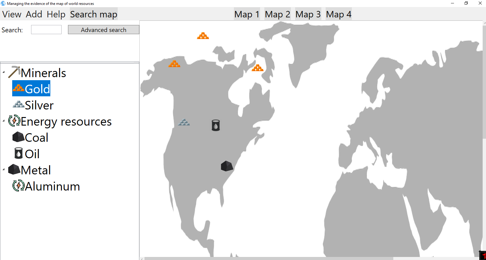
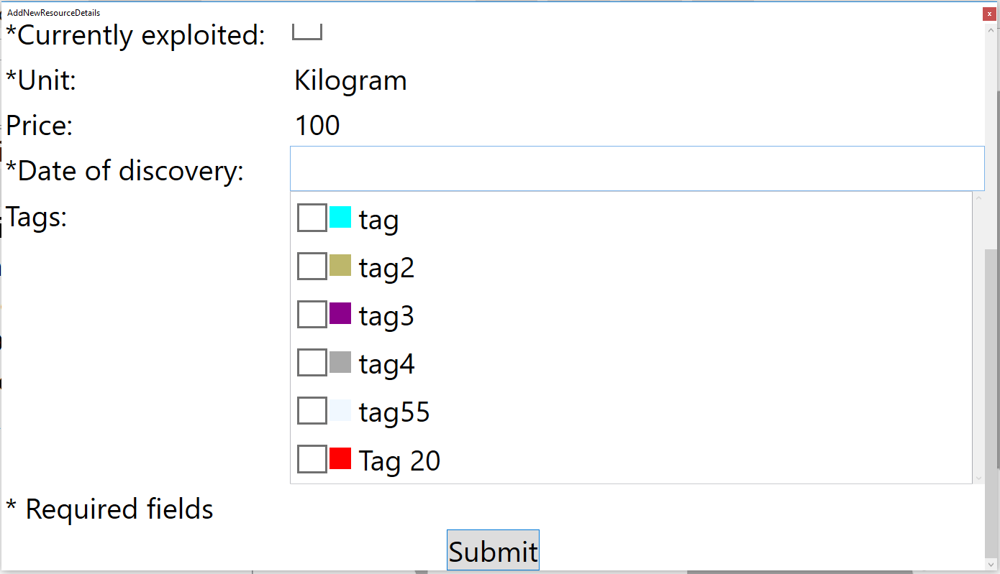
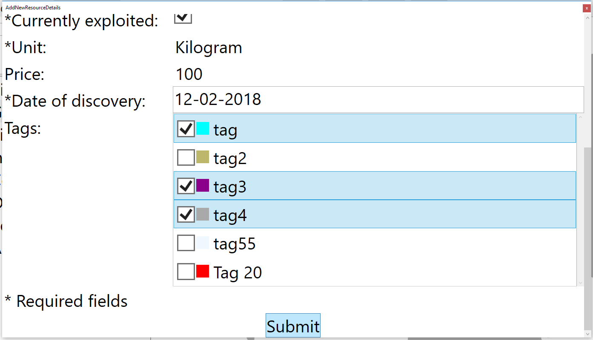
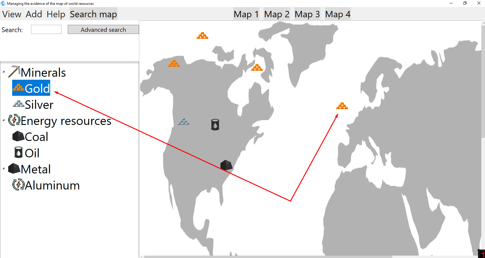

Adding new resource on map
You can add new resource on map. Process of adding should start with drag and drop action that starts with resource from list on the left,
and ends on some map on the right.

That action will open window that looks like this:

You can type in date of discovery and choose tag.

In the end there is new resource visible on map.
